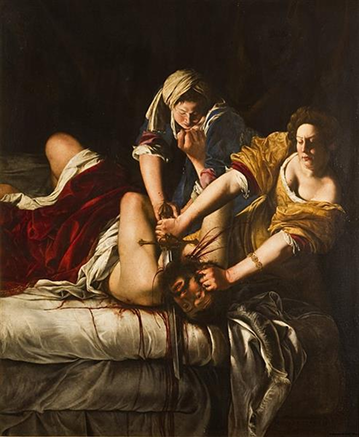

Judith Slaying Holofernes
This painting depicts the biblical story of Judith beheading the Assyrian general Holofernes. Through dramatic composition and powerful imagery, Gentileschi presents Judith not as a passive figure, but as a determined woman taking action.
Artemisia Gentileschi (1593–1656) was one of the most important painters of the Baroque period and among the first women to gain international recognition as a professional artist.
As a young woman, she survived sexual violence and endured a public trial that forced her to defend her own innocence. Despite these challenges, she continued her artistic career and established herself in a male-dominated art world.
Many scholars believe that her experiences influenced works such as Judith Slaying Holofernes, making them enduring symbols of resistance, justice, and female strength.
Artemisia Gentileschi (1593–1656) was one of the most important painters of the Baroque period and among the first women to gain international recognition as a professional artist.
As a young woman, she survived sexual violence and endured a public trial that forced her to defend her own innocence. Despite these challenges, she continued her artistic career and established herself in a male-dominated art world.
Many scholars believe that her experiences influenced works such as Judith Slaying Holofernes, making them enduring symbols of resistance, justice, and female strength.